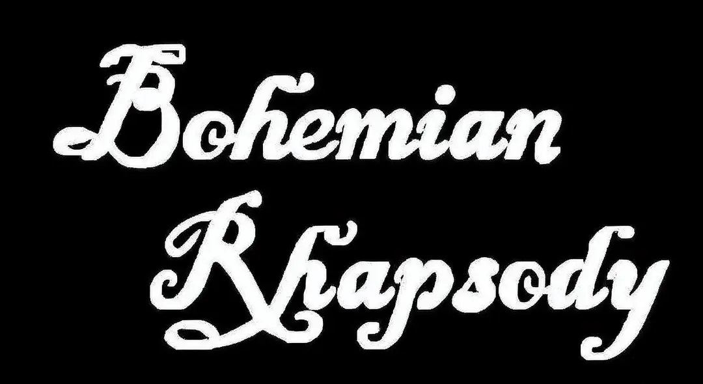

Our team embarked on a journey to advance genetics and engineering education through professional interviews and research.
List of Actions:
- March 2: Wrote activity sheet and queried industry reports using large-scale model.
- March 9: Designed professional questionnaire with open-ended questions.
- March 17: Created business card using school logo and professional tools.
- April 20–25: Interviewed three professionals, researched backgrounds in advance.
- April 26–29: Organized interview content and drafted final report.
This project has illuminated the path for aspiring scientists, bridging education and innovation.
